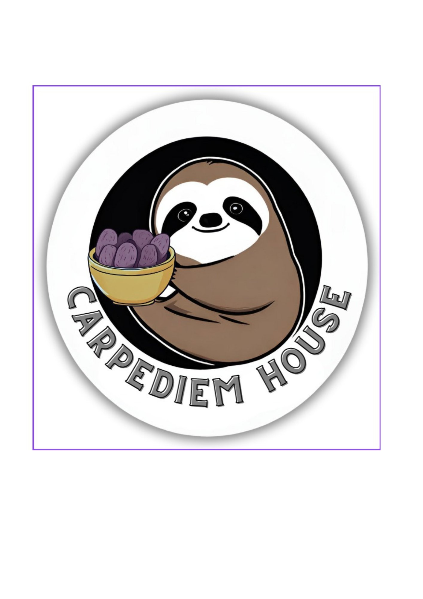
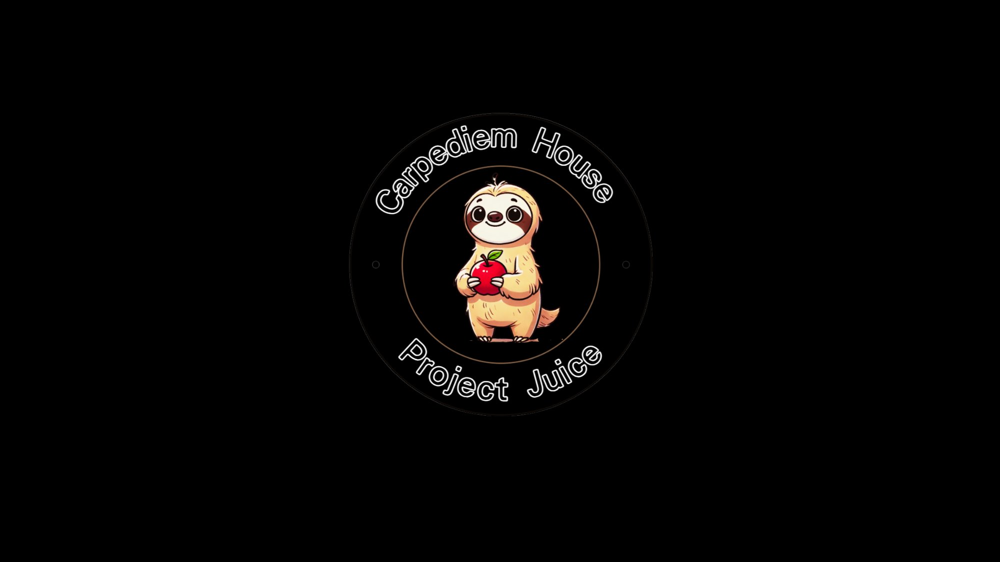
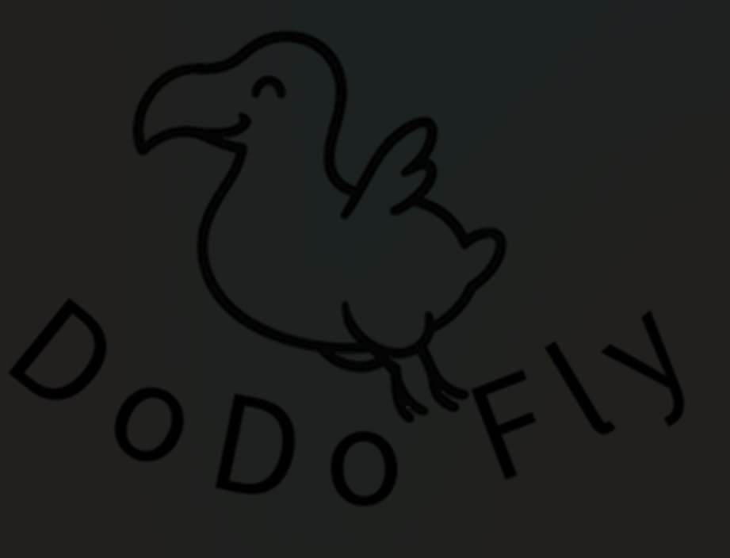
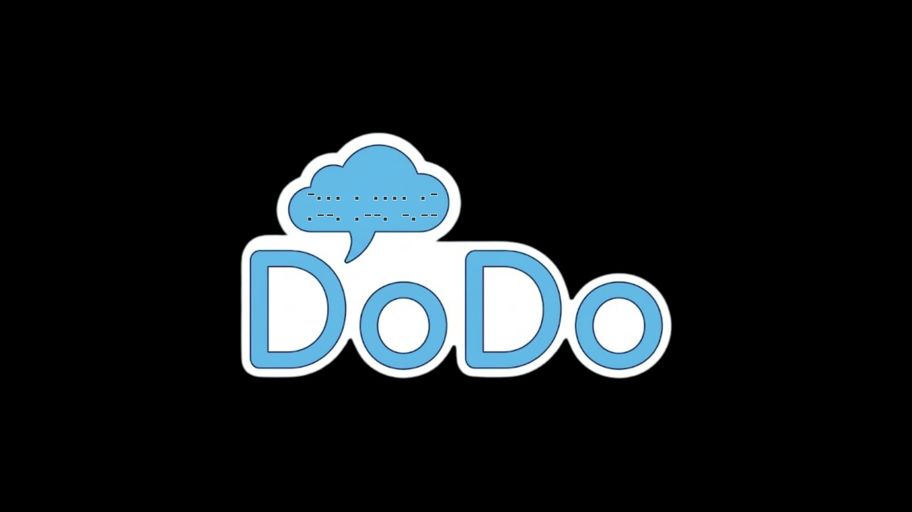
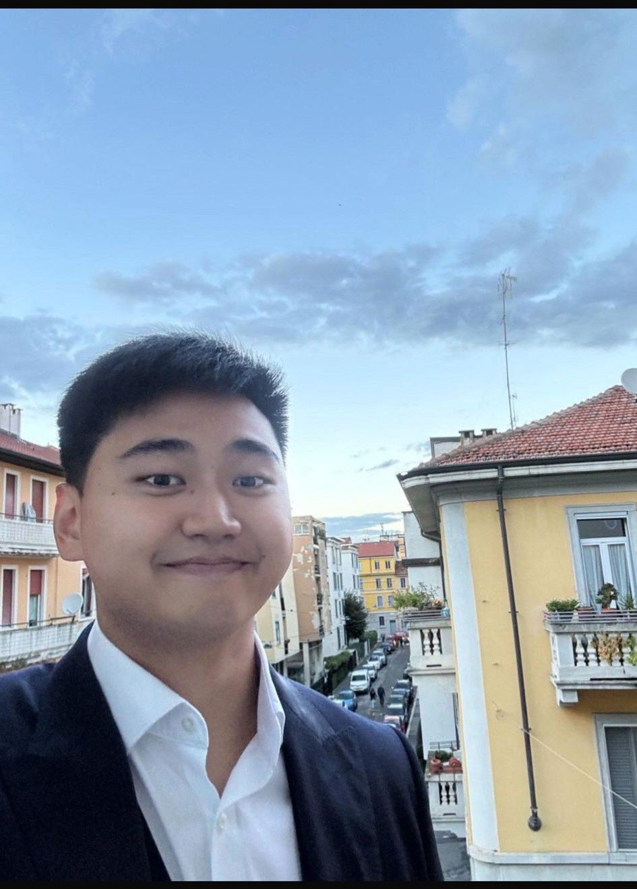
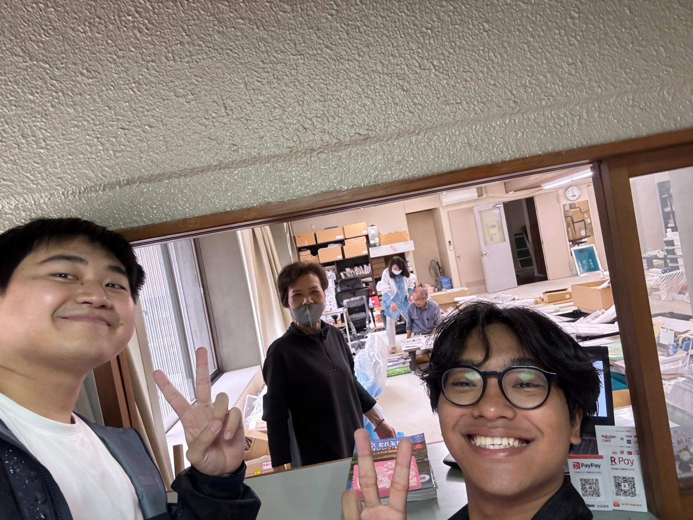
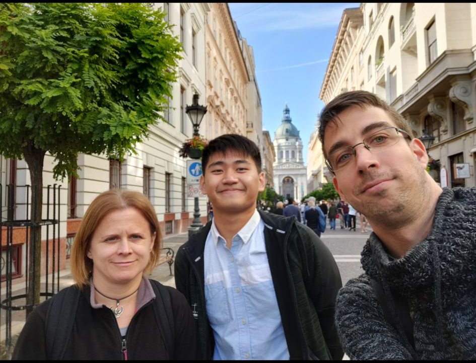
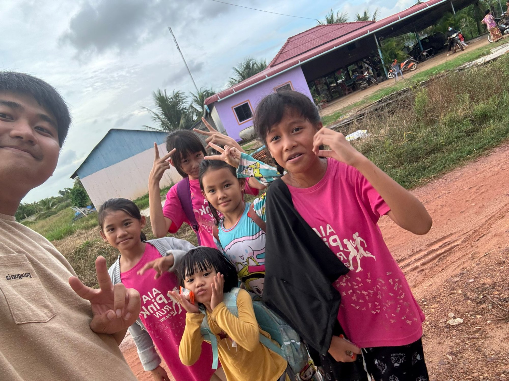
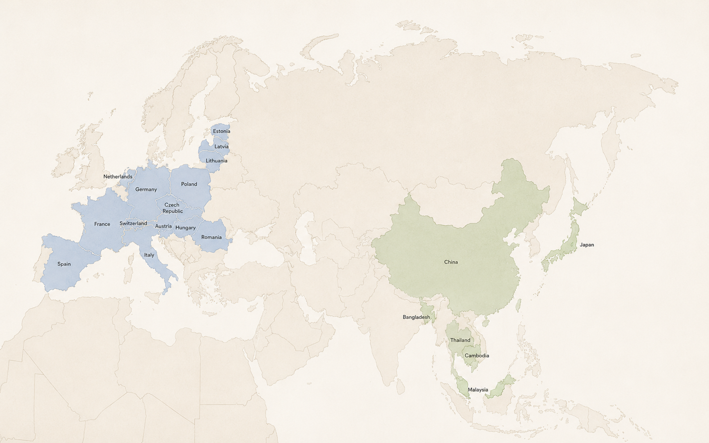

About
Observe. Question.
Build what matters.
I've always been drawn to paying attention — to the small things in a community that don't quite work, the gaps that are easy to walk past. Over time, that curiosity became a habit: noticing a problem, sitting with it, and when an idea forms, not letting it stay in my head. Instead, making it real — step by step.
That's how sugar-free workshops for underserved communities started. Then an education program helping students tackle real problems with AI. Then fermentation research to make fruit juice healthier. And most recently, a voice-AI companion for elderly people living alone. None of it was a grand strategy — each one grew from asking "what if this could actually exist?"
Core Skills
Food-tech, community, AI/SaaS
Survey design, 300-response fieldwork
6 NGOs coordinated independently
HK$15K+ single-day, consultative
HKMA certified
Hardware, TTS/ASR, web platform
SDG Alignment
Ventures
What's being built
Carpediem House
Health-focused social enterprise
Sugar-free baking workshops for people with diabetes, co-delivered with 6 NGOs. 17+ sessions, 170+ participants. Backed by HK$100K from Impact Innovation Lab / MakerBay.

Carpediem House - Project Juice
Fermentation-based sugar reduction
Using fermentation technology to reduce sugar in fruit juice. Validated through a 300-response mixed-methods consumer study with multi-location fieldwork across Hong Kong.

DoDo Fly
AI education for social innovation
12-hour program helping students build community solutions with AI — research, verify, prototype, test, reflect.

DoDo
Reconnecting elderly people with society
A voice-AI companion for elderly people living alone, addressing isolation and emotional challenges. The long-term vision is a SaaS platform connecting subscribers to social resources — people, services, and community support — rebuilding the bridge back to society.

The thread
Carpediem House proved creative ideas can become real impact. Project Juice pushed it into food-tech. DoDo Fly brought it to education. DoDo applied the same instinct to elderly care — not just a device, but a pathway back to social connection.
Programs
From DoDo Fly to DoDo
Both built on AI-Human Collaboration: AI handles what it's good at, humans bring what only humans can.
The Problem
AI is widening the learning gap among secondary students from different socioeconomic backgrounds.
Students with stronger socioeconomic support are often able to access AI tools, enrichment resources, and future-oriented learning earlier. By contrast, many students from lower socioeconomic backgrounds, especially Band 2–3 secondary students, may lack exposure, guidance, and a safe space to learn. Without timely intervention, this AI learning gap will continue to grow.
The Approach
Not "learning AI" — learning to build with AI
Project-based learning where students use AI to tackle real community problems, developing problem-solving, creativity, and execution skills.
12-hour program structure
| Phase | Sessions | Output | AI Role | Human Role |
|---|---|---|---|---|
| Define | 1-2 | Problem statement | Mapping & brainstorm | Decision & input |
| Research | 3-4 | Evidence pack | Draft & source finding | Verify & judge |
| Build | 5-8 | MVP prototype | Content assist | Design & build |
| Test & Pitch | 9-12 | Results & reflection | Analysis support | Present & own |
The Problem
Elderly isolation is a crisis hiding in plain sight
Many elderly people in Hong Kong face loneliness, emotional distress, and disconnection from community resources. Existing tech solutions stop at functionality — they lack the human warmth that truly matters.
The Vision
AI as bridge, not replacement
DoDo positions AI as an entry point — daily voice companionship that understands needs and reduces isolation. The real value comes after: connecting subscribers to real people, services, and community support through a subscription-based care model.
Service Model
Three layers of care
AI lowers barriers → Humans provide care → Society reconnects
Side by Side
DoDo Fly
DoDo
The shared belief
AI should never replace human connection — it should make it possible where it wasn't before. For students, AI opens the door to capability. For elderly people, AI bridges the way back to community. Technology starts the process; real people finish it.
Global
Four countries, four lenses




Global Footprint
Learning across cultures, communities, and systems.
A compact view of places that shaped my global learning: cross-cultural exposure, community observation, and systems thinking for social innovation.

Europe
Asia
Contact
Get in touch
Partnerships, pilots, collaboration — always open to meaningful conversations.